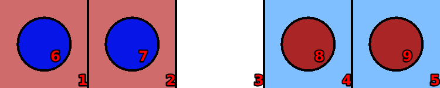
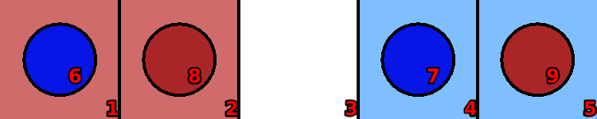
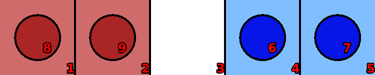

Frogs-and-toads
Language: Teaching Script Entire Dialog
World states:
init-frog.world
second-frog.world
final-frog.world
Primitive concepts used
Object types:
|
locations, blocks |
Colors:
|
red, blue
|
| Spatial relations: |
on, below, between |
| Functions: |
count of, less than |
Teaching Dialog (Rosie in bold)
TEACHER: The name of the puzzle is frogs-and-toads.
Please setup the puzzle.
TEACHER: Load init-frog.

Ok.
TEACHER: Ok.
Please describe the actions, goals, and failure conditions.
TEACHER: If a clear location is to the right of a toad then you can move the toad onto the location.
Please describe the meaning of 'clear' in this context.
TEACHER: If a location is not below an object then it is clear.
Ok, I've learned the meaning of 'clear' for this context.
Please describe the meaning of 'toad' in this context.
TEACHER: If an object is blue and the object is a block then it is a toad.
Ok, I've learned the meaning of 'toad' for this context.
I've learned the action.
TEACHER: If a clear location is to the left of a frog then you can move the frog onto the location.
Please describe the meaning of 'frog' in this context.
TEACHER: If an object is red and the object is a block then it is a frog.
Ok, I've learned the meaning of 'frog' for this context.
I've learned the action.
TEACHER: Load second-frog.

Ok.
TEACHER: If a frog is to the right of a toad and the toad is to the right of a clear location then you can move the frog onto the clear location.
I've learned the action.
TEACHER: If a toad is to the left of a frog and the frog is to the left of a clear location then you can move the toad onto the clear location.
I've learned the action.
TEACHER: Load final-frog.

Ok.
TEACHER: The name of the goal is red-blue-matched.
Please setup the goal state.
TEACHER: Ok.
Please describe the goal.
TEACHER: The goal is that all the red blocks are on the red locations and all the blue blocks are on the blue locations.
I've learned the goal.
TEACHER: Done.
I've learned frogs-and-toads. Should I try to solve the puzzle?
TEACHER: No.
Ok.